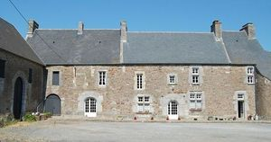
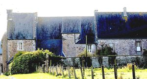
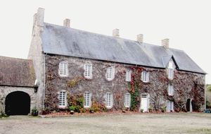
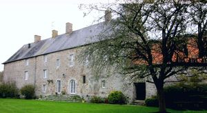
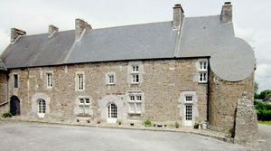

Recensement Jean-Claude Truffet





| Département | 50 — Manche |
| Canton | Quettreville-sur-Sienne |
| Commune | Hyenville |
| Type d'édifice | Manoir |
| Période d'origine | XVII-XVIII |
Deux châteaux dans cet article; Hyenville et des Marais. HYENVILLE, l'héritage du fief se transmet de père en fils ou de frère à frère en cas d'absence de postérité; les propriétaires n'habitent pas tous le manoir puisqu'ils disposent d'une autre propriété sur la commune de la lande d'Airou En 1679, Marie de Grimouville, fille du seigneur de Hyenville, épouse Louis Tanquerez de La Montbrière. Le couple obtient en dot sans doute, la ferme de la Girardière de Haut. Le manoir de Hyenville reste aux Grimouville jusqu'en 1733 date à laquelle l'héritière, Julienne de Grimouville, sans descendance, le vend ; Castel et la Roque. déjà détentrice de la seigneurie de Guéhébert. C'est en 1750 que Louis-Antoine Tanquerey de la Montbrière, petit fils de l'heureux bénéficiaire de la dot rachète aux descendants des Cauvet la seigneurie de Hyenville reconstituant ainsi une grande partie du domaine initial. Louis Antoine Tanquerez de la Montbrière n'habitait pas à Hyenville mais résidait dans son hôtel particulier de Coutances à côté de l'actuel Chambre des métiers, il y meurt en 1791 et laissant à son fils Charles Antoine, qui résidait à la Girardière de Haut, la seigneurie de Hyenville. Ce dernier ne profita guère de l'héritage puisque 3 ans plus tard, il fut guillotiné. Après récupération, sa veuve et ses deux filles conservèrent la propriété de la Girardière de Haut mais le manoir de Hyenville fut vendu en 1802 au bénéfice d'un avocat nommé Capel puis la propriété fut acquise par les familles Blondel, Legoubin, et Livory avant d'être achetée en 1964 par M.et Mme Monsallier. Pendant plusieurs décennies, Mme Monsallier a restauré avec goût et passion ce manoir qui nécessitait une rénovation complète. Pour la qualité des travaux entrepris, et a obtenu en 1990, le prix départemental des Vieilles Maisons Françaises.
DES MARAIS, Hyéronyme Davy, écuyer sieur des Marets", mort à Hyenville en 1671 est le premier propriétaire connu, il était un des fils du seigneur de Quettreville. Dans un acte notarié de 1694, on mentionne un "Jacques Delamare, sieur des Maresqs ". Des inscriptions sur les poutres indiquent Jean Belin comme propriétaire en 1723 et 1725. Au début du XIXe siècle, la propriété appartient au célèbre corsaire Robert Surcouf qui possédait également le manoir de Quettreville-sur-Sienne où il séjournait de temps à autre notamment à l'occasion de la foire de la Sainte Anne pour procéder à la vente de son bétail. A sa mort en 1827, sa femme, Marie-Catherine de Maisonneuve, hérite du manoir des Marais. Elle le vend 14 ans plus tard au maire de Longueville, Antoine Le Bailly, capitaine au long cours. Un négociant de Coutances (Elie Deslandes) rachète la propriété en 1863 puis elle passe ensuite à la famille Ledreney dont la propriétaire actuelle est une descendante. D'un point de vue archéologique, on peut relever quelques éléments intéressants. A l'intérieur trois cheminées dont deux au rez-de-chaussée et une troisième, la plus intéressante, au premier dans une pièce inhabitée qui était devenue la chambre à grains. Trois poutres datées, une dans la grange : par Jean Belin 1727 , une seconde dans la partie centrale de la maison : Fait faire par Mme Surcouf l'an 1839 et la troisième située à l'extrémité sud de la maison : par Jean Belin 1725. La porte qui, au rez-de-chaussée, donne accès à la tour d'escalier possède des moulurations d'un style gothique flamboyant. Éléments protégés MH : les façades et les toitures du bâtiment d'habitation, de la grange accolée au nord et de l'ancienne chapelle ; le puits : inscription par arrêté du 7 avril 1975.
Hyenville; famille de Julienne de Grimouville Des Marais; Famille de Jacques Delamare
"
Deux châteaux dans cet article; Hyenville grav 3-4 et des Marais grav 1-2. Gps 48° 59' 39" nord, 1° 28' 07" ouest